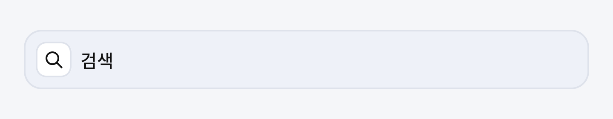
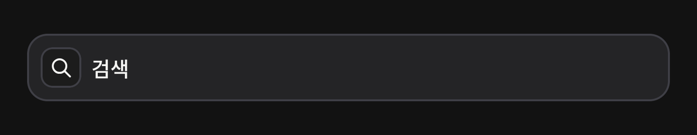

StudioBlockChoiceChip
블록 이름과 선택형 실시간 축소 그림을 표시합니다.
- 컴포넌트 ID
studio-block-choice-chip- 분류
- 선택
- 구현
StudioBlockChoiceChip·MyWidget/app/src/main/java/com/mywidget/editor/core/designsystem/component/StudioSelectors.kt:76- 주요 API
- label, onClick, modifier, enabled, leadingThumbnail
- 지원 상태
- 활성
- 비활성
- 긴 이름 말줄임
- 변형
- 이름만
- 썸네일과 이름
- 크기
- 최소 터치 48dp
- 칩 최소 40dp·반경 12dp
- 썸네일 24dp·반경 7dp
- 테마·토큰
- chipSurface
- surface
- outlineVariant
- 접근성·사용 규칙
- 한 줄 표시와 전체 이름을 분리합니다. 썸네일에 별도 클릭을 추가하지 않습니다.
- 공통 사용 여부
- 텍스트·데이터·모양의 2열 기존 블록 선택에서 사용
- 설계 품질
- 블록 데이터 조회는 상위 화면이 담당하고 칩은 슬롯만 노출함
- 판단
- 유지
- 판단 근거
- 실제 블록 종류·순번·썸네일 정책은 StudioBlockChoices에 유지합니다.
- 구현·문서
- 현재 소스 위치와 심볼 확인
- 렌더링
- 네이티브 캡처 있음
코드 예시
StudioBlockChoiceChip("검색", onClick = {}, leadingThumbnail = {
Icon(painterResource(R.drawable.ic_ui_search), contentDescription = null, Modifier.size(16.dp))
})Android 네이티브 예시
아래 캡처에 표시된 상태와 기기 조건을 확인했습니다.

411 × 891 dp · 560 dpi · 글꼴 1배 · API 35 · ko-KR
캡처 기준 HEAD
28c96a452 · 소스 지문 2926a62326fe · 2026-11-13T13:54:53.964821Z
411 × 891 dp · 560 dpi · 글꼴 1배 · API 35 · ko-KR
캡처 기준 HEAD
28c96a452 · 소스 지문 2926a62326fe · 2026-11-13T13:54:53.964821Z